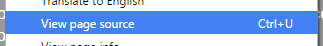

Websites are composed of building blocks that complement eachother to produce a final product. At a very basic level, they are written purely in HTML. This is a display-oriented language that does a good job of abstracting document-like elements and information, providing a really solid structure to your web-related endeavours should you approach the task with ample planning.
| HTML lays the ground-work for web development. |
| It has specific syntax that helps display information. |
| There are tools that can help you interact with this. |
Why yes, inquisitor! It's a good way to analogise them, at least. Defensive design ensures that steps are taken to provide backward compatibility of these elements, should any break- this keeps your service functioning at least slightly.
The current model is a trifecta of languages that each provide an independent functionality that builts upon the service in its current state. It's important to think of a website as a bunch of seperate units working in tandem to display something to you; and, of course, like most things, those before us have forged some principles to follow in the interest of good practice.
Seperation of content from its actual presentation allows you to fiddle with individual properties of your website. By keeping things in specificthis is similar to the concept of encapsulation in software programming places, there is therefore a greater ease-of-maintenance, consistency and accessibility. HTML is purely for information so we'll start here at the ground floor...
As a case study, let's say you want to make a website about a subject; you might write some sort of planning document to solidify the content before webify-ing it- that'd be pretty forward thinking of you. This constitutes one element of HTML- arguably the most important part!
Next up, is qualifying this content- by this, I simply mean wrapping it in an appropriate identifier. In HTML, these are syntactically defined as 'tags', and they look like thisthey must be 'closed', which is done by writing the tag again but prepending the element name with a '/': <element-name>
So, you have to evaluate what descriptors most specifically suit your information- do you have a paragraph of text? Use <p>. Do you have a title for that paragraph? Use <h1>. Is there a list in there somewhere? Use <ul>.
So, it's up to you to decide how you want to semantically wrap your information, at this first stage of the production line.
Importantly, these elements can also have 'attributessuch as <element attribute="myAttr">' and 'classessuch as <element class="myClass">' - we'll look into these in depth a little later.
Now that you're roughly aware of how to translate your content to the HTML format, it's a good idea to have a look at some examples of how others have structured their own. This requires some preliminary working skills in order to competently fiddle with the inner-workings of websites. Let's take a look at the magical subset of...
Your browser will have some sort of developmental tools to offer that allow you to view the source code of a web-page. While this can be achieved here by right-clicking the viewport and selecting the right option, or even clicking the 'View Page Source' option in the footer of this page, you'll recieve a much nicer graphical representation of the HTML tree by opening your browser's developer mode. This is usually bound to F12, however you may need to give it a quick google.
With this kind of display, you can select and modify elements, access the console to input script commands, and essentially control every faucet of the page!
So now you know how HTML works, we can look at it contextually. It was originally designed to handle simple, text-based documents, but HTML 4.01released 1999's release heralded a new wave of creative application- it provided support for new building blockslike 'css' - cascading style sheets which apply a lick of idiomatic paint to your content!
HTML5, ostensibly tardy to the party, ushered another wave of creativity, relaxing certain strict boundaries set in place by the web-consortium and adding a plentiful bounty of relevant tagssuch as <progress> and <article>.
A problem of the lax nature of HTML is that consequently, you can make mistakes during coding that the client will usually amend for you- this uses more processing power, and leads to sloppy practice! This actually instigated the development of a branch of HTML, the brainchild of two languages...
XHTML excercises a more strict grasp of syntax resulting from its symbiosis with XML- although it still uses the same tags, there's a stricter ruleset in play:
The birth of this language was determined as a necessary fixer for what HTML didn't account for- as the W3 logs: "...when XML was introduced, a two-day workshop was organised to discuss whether a new version of HTML in XML was needed. The opinion at the workshop was a clear 'Yes': with an XML-based HTML other XML languages could include bits of XHTML, and XHTML documents could include bits of other markup languages. We could also take advantage of the redesign to clean up some of the more untidy parts of HTML, and add some new needed functionality, like better forms.".
You might be a little confused now as to which one you should use- the answer is: if you do it right, it doesn't matter! Understand the scope of your project and what it entails before starting, and follow the 'standards' guidance in the next topic; sometimes, you mightn't even get the choice. Many businesses exist on monolithic systems, and and restrictions might be placed upon you by a client or scenario. Run with it!